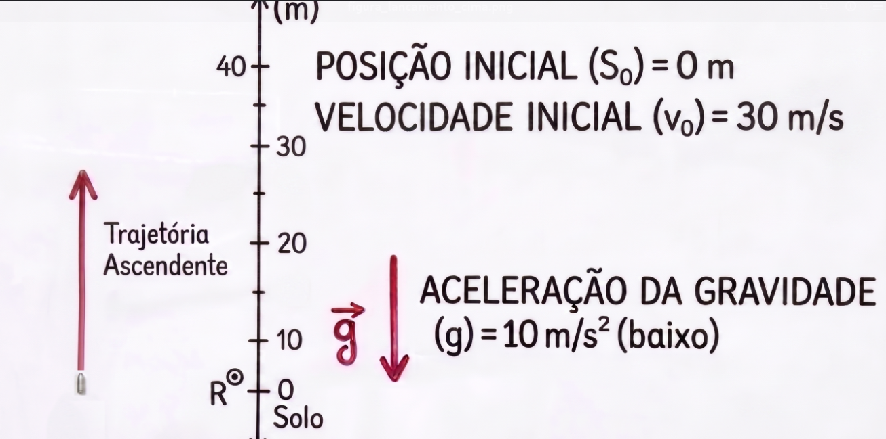

Lista de questões sobre cinemática - Física - TPQ - 2026
Table of Contents
Instruções Gerais
- A atividade deverá ser realizada de forma manuscrita, digitalizada, e enviada via plataforma SIGAA;
- O prazo esta estabelecido no ambiente virtual da turma na mesma plataforma;
- Não é necessário copiar os enunciados das questões, apenas elaborar as respostas de forma organizada;
- Não é necessário capa, apenas a identificação com nome completo e turma.
1. Estudo do movimento da aranhinha (FIGURA 1)

Figure 1: FIGURA 1: Movimento de uma aranhinha em linha reta e com velocidade constante.
A figura acima representa o movimento de uma aranhinha em uma linha reta. Aqui as cores apenas indicam cada momento do movimento dessa aranha ao longo do percusso.
1) Referencial e Posição (\(S\))
O conceito de movimento depende de onde o observador se encontra. Na imagem, a posição 0 foi definida como o Referencial.
A) Observação do Ponto de Origem
Identifique na linha reta o ponto marcado com a letra R. Por que é necessário definir este ponto antes de descrever o caminho da aranhinha?
B) Identificação de Posições
Anote as posições ocupadas pela aranhinha em cada instante:
- Em \(t_1 = 0 \, \text{s}\), qual a posição (\(S_1\))?
- Em \(t_3 = 10 \, \text{s}\), qual a posição (\(S_3\))?
C) Análise de Sinal
O que o sinal negativo na posição \(S_1 = -10 \, \text{cm}\) indica em relação ao Referencial (R) e à orientação da trajetória (seta para a direita)?
2) Intervalo de Tempo (\(\Delta t\)) e Deslocamento (\(\Delta S\))
O movimento ocorre conforme o tempo passa e a posição muda.
A) Cálculo de Tempo
Quanto tempo a aranhinha levou para ir da posição \(S_1\) até a posição \(S_4\)? (Calcule \(\Delta t = t_4 - t_1\)).
B) Cálculo de Deslocamento
O deslocamento escalar é a variação da posição (\(\Delta S = S_{\text{final}} - S_{\text{inicial}}\)). Calcule o deslocamento da aranhinha entre:
- O intervalo de \(t_1\) a \(t_2\).
- O intervalo total de \(t_1\) a \(t_4\).
3) Velocidade Escalar Média (\(v_m\))
A velocidade mede a rapidez com que a posição muda em um determinado intervalo de tempo.
A) Cálculo da Velocidade Média
Utilize a fórmula \(V = \frac{\Delta S}{\Delta t}\) para calcular a velocidade da aranhinha nos seguintes trechos:
- Trecho A (de \(t_1\) a \(t_2\)): \(V_A = \dots\)
- Trecho B (de \(t_3\) a \(t_4\)): \(V_B = \dots\)
B) Classificação do Movimento
Ao comparar os resultados do exercício anterior, a velocidade mudou ou permaneceu constante?
4) Síntese e Aplicação
Previsão
Se a aranhinha mantiver a mesma velocidade média calculada anteriormente, qual será a sua posição (\(S_5\)) no instante \(t_5 = 20 \, \text{s}\)? Mostre o raciocínio.
2. Estudo do movimento da baratinha (FIGURA 2)

Figure 2: FIGURA 2: Movimento de uma baratinha em linha reta e com velocidade constante.
1) Deslocamento (\(\Delta S\)) e Sentido do Movimento
O movimento ocorre conforme a posição muda ao longo do tempo.
A) Cálculo de Deslocamento
O deslocamento escalar é a variação da posição (\(\Delta S = S_{\text{final}} - S_{\text{inicial}}\)). Calcule o deslocamento total do carro entre:
- O intervalo de \(t_1\) a \(t_4\). (Lembre-se: \(\Delta S = S_4 - S_1\)).
B) Análise do Sentido
Compare o valor calculado acima com a seta que indica o sentido positivo da trajetória (seta "+", para a direita). O deslocamento calculado é positivo ou negativo? O que este sinal revela sobre o sentido do movimento do carro?
2) Velocidade Escalar Média (\(v_m\))
A velocidade média nos diz quão rapidamente a posição muda em um intervalo de tempo.
A) Cálculo da Velocidade Média
Utilize a fórmula \(V = \frac{\Delta S}{\Delta t}\) para calcular a velocidade média do carro durante todo o movimento:
- Trecho Total (de \(t_1\) a \(t_4\)): \(V = \dots\)
3) Síntese
Previsão
Qual seria a posição da baratinha correspondente ao tempo \(t = 20 \, \text{s}\)?
3. Exemplo de MUV: movimento vertical sob ação da gravidade
Considere o movimento vertical sob ação exclusiva da gravidade, ou seja, um Movimento Uniformemente Variado (MUV) com aceleração constante \(a = -g\), onde \(g = 10 \, \text{m/s}^2\) e adotamos o sentido positivo da trajetória para cima.
Abaixo estão representados os dois casos que serão estudados: a queda livre a partir do repouso e o lançamento vertical com velocidade inicial para cima.

Figure 3: FIGURA 3A: Queda livre a partir do repouso (\(v_0 = 0\)). A seta indica o sentido positivo da trajetória (para cima).

Figure 4: FIGURA 3B: Lançamento vertical para cima (\(v_0 > 0\)). A seta indica o sentido positivo da trajetória (para cima).
Equações horárias do MUV vertical
Antes de resolver as questões, vamos relembrar as funções horárias que descrevem esse movimento, considerando a aceleração constante \(a = -g = - 10 m /s^2\):
Função horária da velocidade:
\(v(t) = v_0 + a t\)
Função horária da posição:
\(S(t) = S_0 + v_0 t + \dfrac{1}{2} a t^2\)
Cálculo da velocidade
Questão 1 (Caso queda livre \(v_0 = 0\))
Uma bola é abandonada do repouso (\(v_0 = 0\)) de uma altura de \(80 \, \text{m}\) em relação ao solo. Adotando \(g = 10 \, \text{m/s}^2\) e o sentido positivo para cima, calcule:
- A velocidade da bola no instante \(t = 2 \, \text{s}\).
- O instante em que a bola atinge o solo (\(S = 0\)) e o módulo da velocidade nesse momento.
Questão 2 (Caso lançamento para cima \( v_0 > 0\))
Um projétil é lançado verticalmente para cima com velocidade inicial \(v_0 = 30 \, \text{m/s}\) a partir do solo (\(S_0 = 0\)). Calcule a velocidade do projétil nos instantes \(t_1 = 2 \, \text{s}\) e \(t_2 = 5 \, \text{s}\). Interprete fisicamente o que a mudança de sinal da velocidade indica.
Cálculo da Posição
Questão 1 (Caso queda livre \(v_0 = 0\))
Utilizando os dados da Questão 1 anterior (bola abandonada de \(S_0 = 80 \, \text{m}\)), escreva a função horária da posição \(S(t)\) e calcule:
- A posição da bola no instante \(t = 2 \, \text{s}\).
- O deslocamento escalar \(\Delta S\) da bola entre o instante inicial e \(t = 2 \, \text{s}\).
Questão 2 (Caso lançamento para cima \(v_0 > 0\))
Utilizando os dados do projétil (\(v_0 = 30 \, \text{m/s}\) e \(S_0 = 0\)), escreva a função horária da posição \(S(t)\) e calcule a posição do projétil nos instantes \(t_1 = 2 \, \text{s}\) e \(t_2 = 5 \, \text{s}\). Compare os resultados e explique o que ocorre com o movimento do projétil entre esses dois instantes.
Altura máxima
Questão 2 (Caso lançamento para cima \(v_0 > 0\))
Para o projétil lançado verticalmente para cima com \(v_0 = 30 \, \text{m/s}\), determine:
- O tempo de subida (\(t_s\)) necessário para alcançar a altura máxima. Dica: no ponto de altura máxima, a velocidade se anula (\(v = 0\)). Utilize a função horária da velocidade para encontrar \(t_s\).
- A altura máxima (\(S_{\text{máx}}\)) que o projétil atinge em relação ao solo. Dica: substitua o valor de \(t_s\) encontrado no item anterior na função horária da posição.
4) Caso adicional: lançamento a partir de uma altura elevada (\(S_0 > 0\))
Até agora, estudamos lançamentos partindo do solo (\(S_0 = 0\)). Considere agora uma situação em que o objeto já é lançado de uma posição acima do nível de referência (solo).
Enunciado
Um pequeno foguete de brinquedo é lançado verticalmente para cima a partir do topo de um prédio de \(40 \, \text{m}\) de altura em relação ao solo. A velocidade inicial do lançamento é \(v_0 = 10 \, \text{m/s}\) (para cima). Adote \(g = 10 \, \text{m/s}^2\), considere o sentido positivo da trajetória para cima e despreze a resistência do ar.
Questão 1 – Função horária da posição
Escreva a função horária da posição \(S(t)\) para o movimento do foguete, utilizando os dados fornecidos (\(S_0 = 40 \, \text{m}\) e \(v_0 = 10 \, \text{m/s}\)).
Questão 2 – Cálculo do tempo de queda (atinge o solo)
Determine os instantes de tempo em que o foguete atinge o solo, ou seja, quando a posição \(S(t) = 0\). Lembre-se de que a equação resultante será uma equação do 2º grau em \(t\).
Questão 3 – Interpretação do tempo negativo
Um dos valores encontrados para o tempo na questão anterior é um número negativo.
- O que esse valor negativo representa do ponto de vista matemático na equação?
- Do ponto de vista físico, por que devemos descartar esse valor ao descrever o movimento do foguete a partir do instante \(t_0 = 0\,s\)?